Prva posada koja je letela oko Meseca u poslednjih 50 godina — 9 dana u dubokom svemiru.
Bivsi mornarički pilot F-14 i F-18, kasnije test pilot, a od 2009. NASA astronaut. Proveo 165 dana na ISS-u (2014).
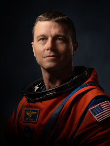
Iskusni mornarički pilot i astronaut sa misijom na ISS-u (Crew-1, 2020–2021). Proveo 167 dana u svemiru.
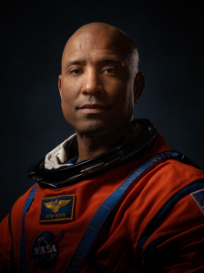
Rekorderka u najdužem boravku žene u svemiru — 328 dana na ISS-u. Prva žena u dubokom svemiru.
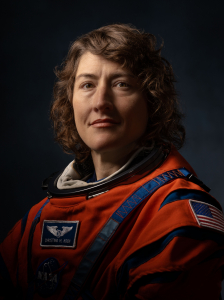
Bivsi vojni pilot CF-18. Kanadski astronaut na svom prvom svemirskom letu, izabran 2009. od Kanadske svemirske agencije.
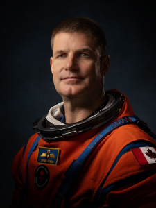
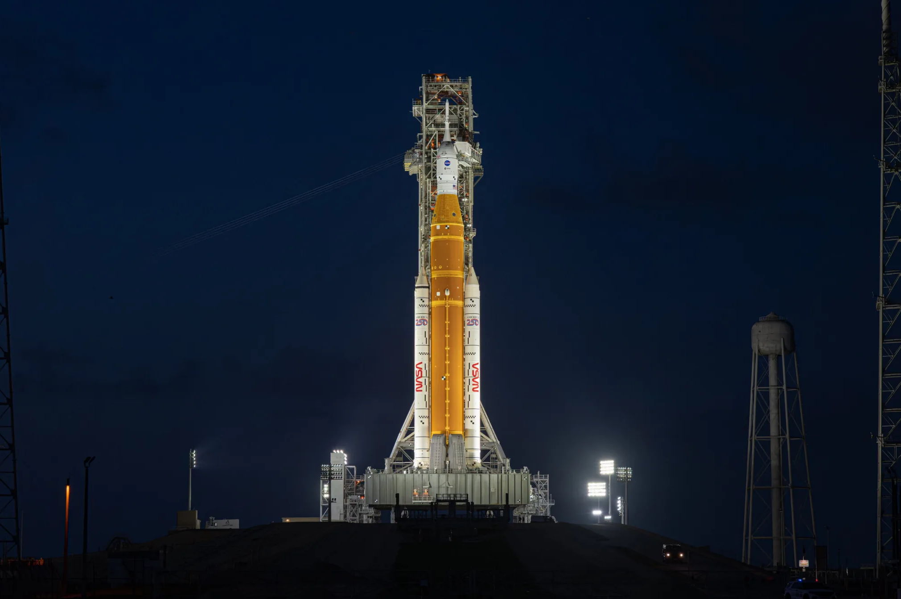
Tehničke specifikacije:
| Ukupna visina | 98 m |
| Masa pri lansiranju | 2,61 mil. kg |
| Potisak pri lansiranju | 39,1 mil. kg |
| Lansirna rampa | LC-39B, Kennedy SC |
| Datum lansiranja | 1. april 2026., 18:35:12 EDT |
| Vreme povratka | 10. april 2026., 20:07:27 EDT |
| Vreme misije | 9 dana, 1 sat, 32 minuta |
su tečni vodonično-kiseoni motori preuzeti iz programa Space Shuttle, koji u misiji Artemis II pogone centralni stepen rakete SLS. Svaki je visok 4m i težak oko 3,5 t.
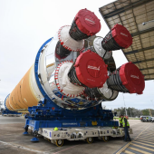
je cetvoromestna kapsula NASA za misije dubokog svemira sa servisnim modulom od European Space Agency. Prva letelica sa posadom nakon Apollo programa koja je obisla Mesec i vratila se na Zemlju u okviru misije Artemis II.
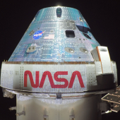
je visok preko 60 metara, sastoji od dva rezervoara za vodonik (2 miliona litara ohlađenih na -253C) i kiseonik (742.000 litara tečnog kiseonika na -183C) i pokriven prepoznatljivom narandžastom termoizolacionom penom.
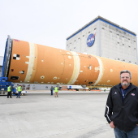
Razvijaju oko 75% ukupne sile potiska tokom lansiranja, a nakon 2 minuta leta (na visini od oko 67 km) odvajaju se od centralnog stepena i padaju u okean.
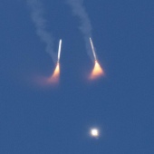
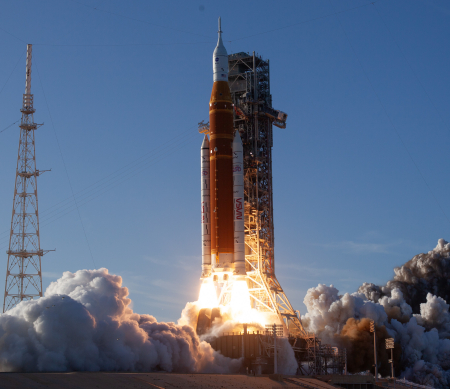
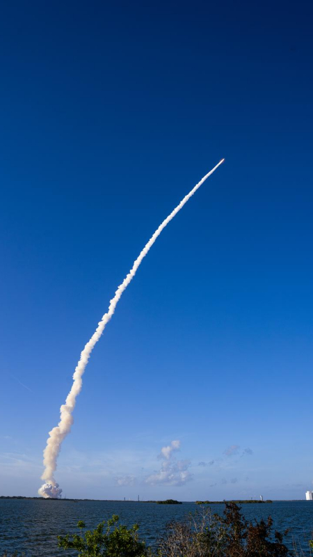
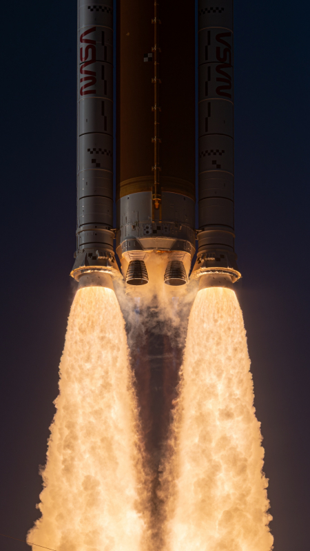
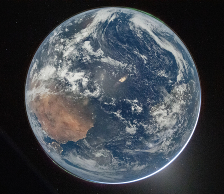
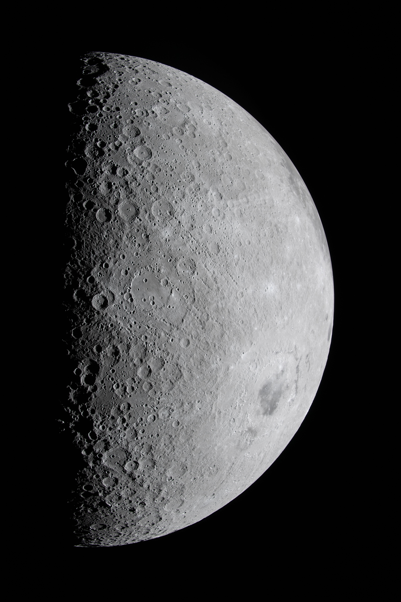
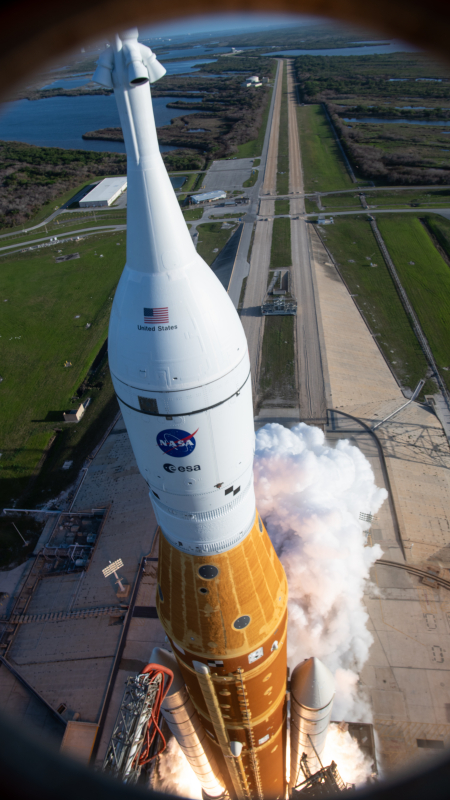
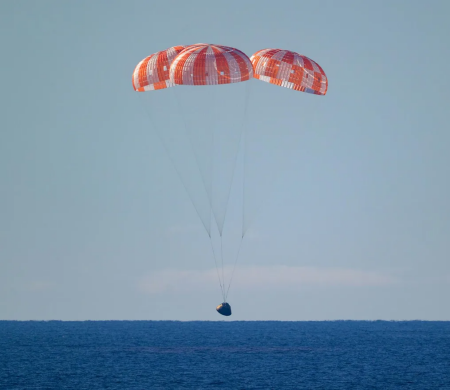
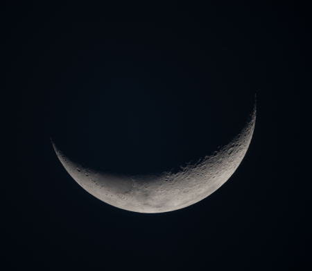
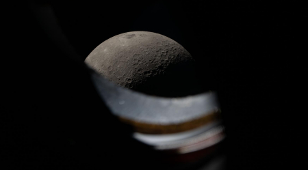
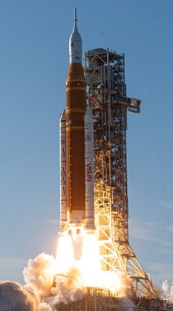
Lansiranje i niska orbita Zemlje
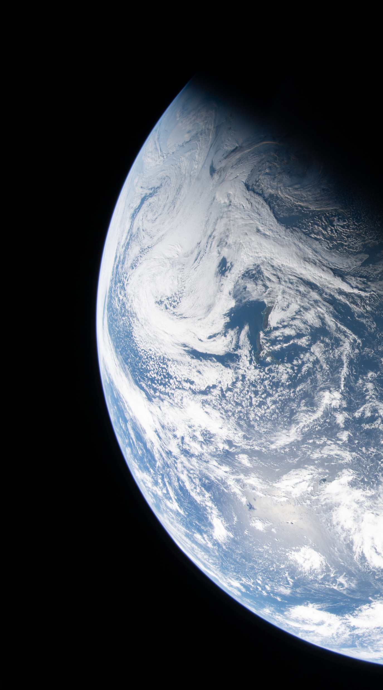
Visoka orbita Zemlje i testiranje
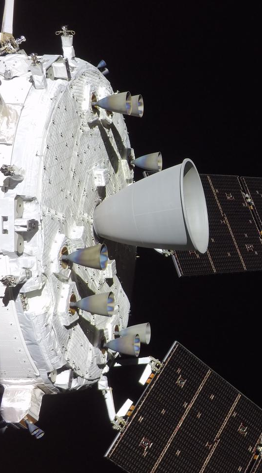
Translunar injection (putanja ka Mesecu)
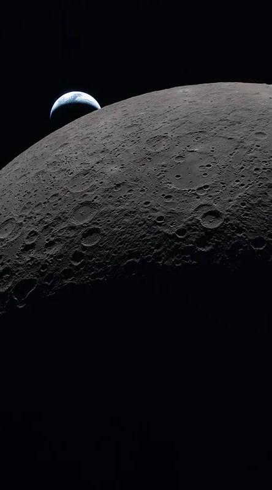
Dolazak do Meseca i prelet iza tamne strane.
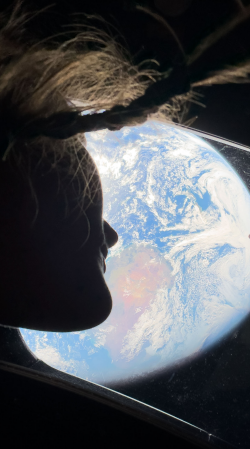
Povratak do zemlje.
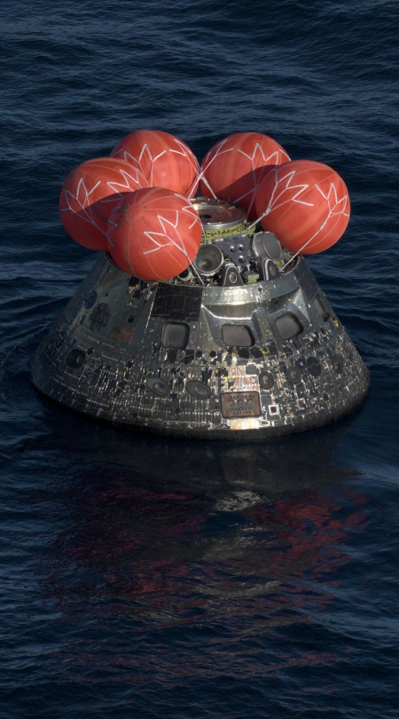
Ulazak u atmosferu i sletanje u okean.